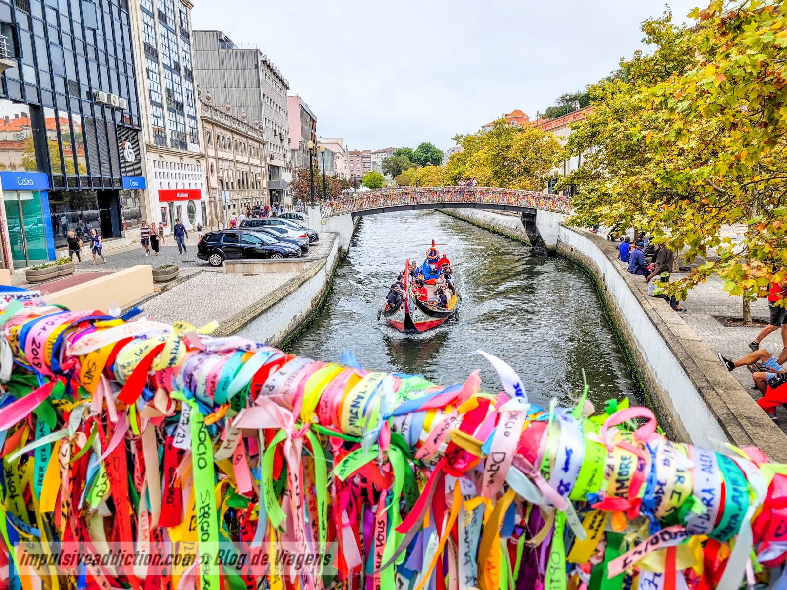

Turismo na cidade de Aveiro
Aveiro
Aveiro é um dos destinos turísticos mais emblemáticos da região Centro, conhecida pelos seus canais, pelos tradicionais barcos moliceiros e pela arquitetura em estilo Arte Nova. A cidade convida a passeios pelo centro histórico, à descoberta da Ria de Aveiro e das salinas, bem como à visita de praias próximas como a Praia da Costa Nova, famosa pelas suas casas às riscas coloridas. Além do património natural e cultural, Aveiro destaca-se pela gastronomia, especialmente pelos tradicionais Ovos Moles de Aveiro, tornando-se um destino que combina história, paisagem, cultura e sabores típicos.
